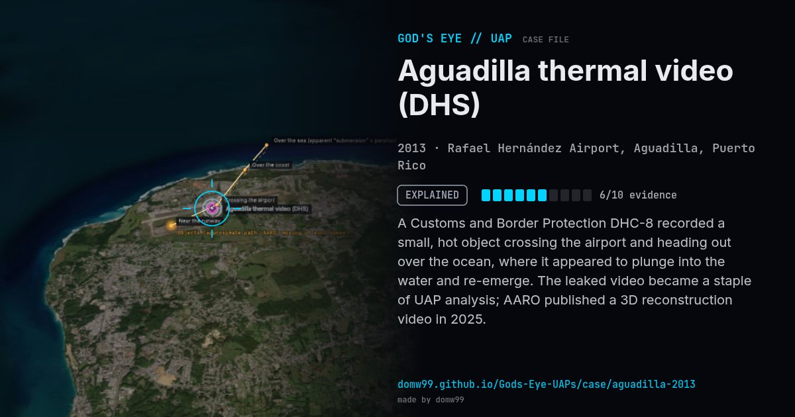

Aguadilla thermal video (DHS)

A Customs and Border Protection DHC-8 recorded a small, hot object crossing the airport and heading out over the ocean, where it appeared to plunge into the water and re-emerge. The leaked video became a staple of UAP analysis; AARO published a 3D reconstruction video in 2025.
Explanation
AARO assesses with high confidence the objects showed no anomalous speed or behaviour: a reconstruction of the sensor’s look angle shows two objects travelling near each other in a straight line at wind speed, never entering the water. Its case resolution assesses with moderate confidence that they were a pair of sky lanterns. Some independent analysts still dispute this.
What was seen
Shape: Small hot object; appears to enter and exit the sea
Witnesses: U.S. Customs and Border Protection aircrew; tower controllers
Duration: ~3 minutes of video
Sources
Browse
- 2010s
- Explained
- Photo and video cases
- Official government documents
- Video footage
- Infrared or other sensor data